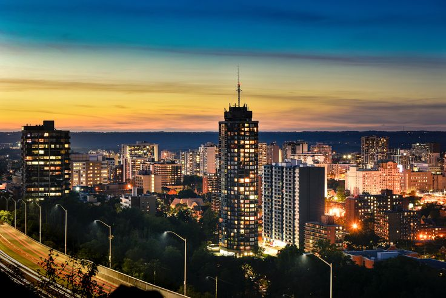

Waitomo is a village on the North Island of New Zealand. It’s known for its extensive underground cave systems.
Thousands of glow-worms light up the Glowworm Caves. The vast Ruakuri Cave features waterfalls and limestone formations. West, Mangapohue Natural Bridge is a high limestone arch over Mangapohue Stream. Northeast of the village, Otorohanga Kiwi House shelters several species of the rare native kiwi bird. The easiest way to see the Waitomo Caves is with a walking or boat tour. If you’re into adventure, try the unique experience of Black Water Rafting - you'll crawl, swim and float through the caves on a rubber tube. Or you could abseil or zip-line through the darkness. However you choose to explore Waitomo Caves, you're bound to agree they're a wonder of nature. There is as much to see and experience above ground as there is below. Enjoy good cafes and walks as well as natural wonders including the beautiful Marokopa Falls and limestone Mangapohue Natural bridge. A walkway beginning near the Waitomo Museum of Caves leads through farmland where you'll see fascinating rock forms. For a quirky insight into rural New Zealand life, take in one of the local farm shows, or go exploring on a guided horse trek. If you'd like to visit some New Zealand’s rarest birds, including our national icon, the kiwi, head to Otorohanga Kiwi House in Otorohanga. Nearby, the town of Piopio offers guided tours of the Denize Bluffs, a filming location seen on The Hobbit: An Unexpected Journey, and further south the Pureora forest provides some great short and long hikes suitable for all levels as well as the Timber Trail.
Just a hour away is the populous Hamilton city, the largest city in the Waikato region. There is a wide range of activities, from nature trails to museums for everyone to enjoy.
The city of Hamilton is located on the banks of the mighty Waikato River, which is best appreciated from one of the scenic riverside walks and cycleways. The visually stunning Hamilton Gardens are webbed by paths that journey through a gallery of themed gardens from grand Italy to tranquil Asia. Other city highlights include the Waikato Museum which provides an insight into the areas rich history and the Hamilton Zoo, which provides native birds with enormous freedom in a walk-through free flight aviary. Hamilton's central precinct is easy to walk and packed with cafes, restaurants, a casino and bars where you can wine, dine and dance the night away. The city is also well known as a destination for national and international events from sporting matches such as rugby, cricket, netball, rowing and boxing to concerts and festivals. Annual events such as the National Agricultural Fieldays(opens in new window) and Balloons over Waikato(opens in new window) festival draw crowds from far and wide.